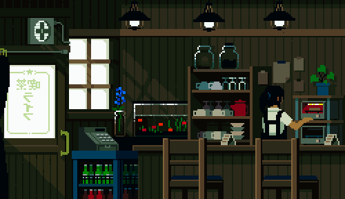

Setup

Download Sublime Text Editor
To make good websites, you'll need a good text editor.
Use whichever one you'd like, but I recommend sublime
Create Github Repository
A copy of your code will live on an online repository, to make it easier for others to read, and also to prevent it from becoming lost in time.
1. Make an account on github.com
2. Make a new repository named noblemansion-sites
3. Make sure to select "initialize with README.md"
Download Git for the command prompt
To push our work from our local computer to github.com, we'll need to download the
git program.
It's good to save and push your work consistently, so other collaborators can see your code,
and to make sure the code never gets lost.
1. Wherever the installer says "Git GUI", please unselect it. We will not be using the Git graphical user interface for this tutorial.
2. On Windows, select "Use Git from the Windows Command Prompt" when it asks.
3. The rest of the congifuration you can leave as the default.
Pull repo from github.com to your computer using Git
Now we can use the power of Git. You'll need to become comfortable with pulling and pushing your code to and from github.com or gitlab.com, so that you can access and edit your code from any computer in the future.
1. Open the command prompt for windows, or terminal for mac.
2. Type "git" and press enter, just to make sure it's been installed.
3. Go to your repository on github.com and copy the repo link.
4. Navigate to an acceptable folder (using the "cd" command), and type git clone [your link], then press enter.
You should have a copy of the online repository downloaded to your personal computer. We'll spend our time editting this copy, before pushing it back up to github.com.
Make a change, and push it to github.com
We're almost done with setting up our project. Lastly, let's make sure that we can push our code back to github after making changes, because we'll need to do that a lot later on.
1. Open sublime text editor, and then open the folder you cloned from github
2. Create a new file, and save it as 0-index.html
3. In the command prompt, cd into the project directory, type git config --global user.email [github email], and then type git config --global user.name [your name]. This will set your name and email for all projects. You'll likely only need to do this once.
4. Type 'git add -A .' and press enter.
5. Enter 'git commit -m "adding index file to project"'
6. Enter 'git push origin master'
7. Check github to make sure the new 0-index.html file has arrived.
Now we're all set and ready to begin!
Chapter 2
Positioning
Websites consist of HTML, CSS, and Javascript.
HTML creates elements on a page.
CSS gives those elements color, shape, and position.
Javascript allows for functional control over the elements.